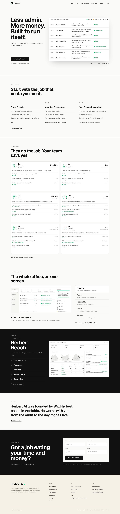
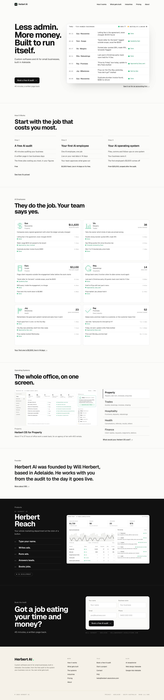

Phase 4, finding 2. The whole page at 1440, three ways, scaled down to compare the run of light and dark.
TodayFour paper sections, ink Products, the paper Founder strip, ink Book the Audit.

1. Founder moved upLight then dark: five paper sections, then Products and Book the Audit as one dark run split by a hairline. The founder note follows the systems Will builds. Recommended.

2. Founder turned inkKeeps the order; the last three sections become one dark run. Heavier, and the founder note reads as part of the sales close.